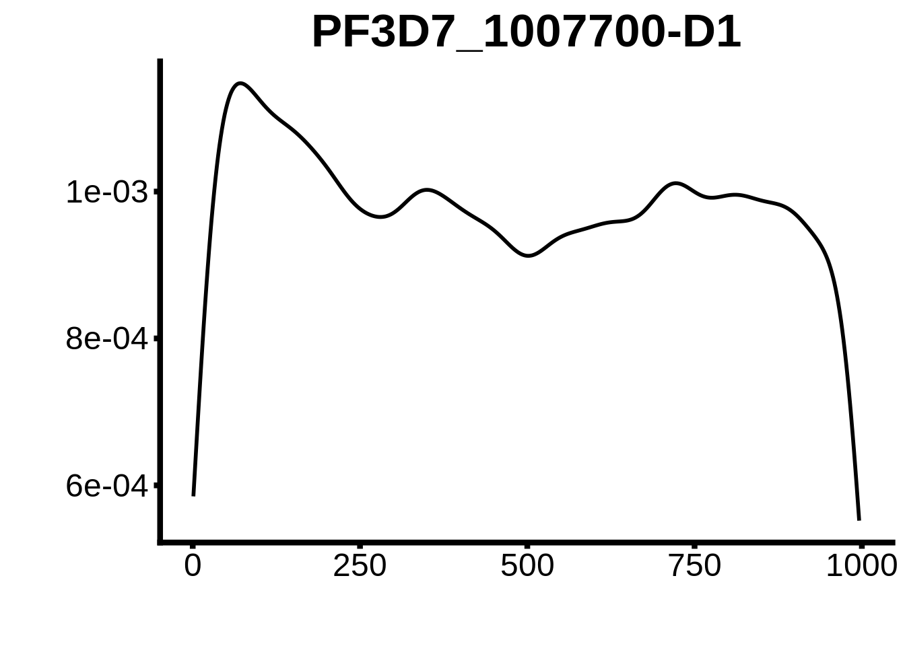
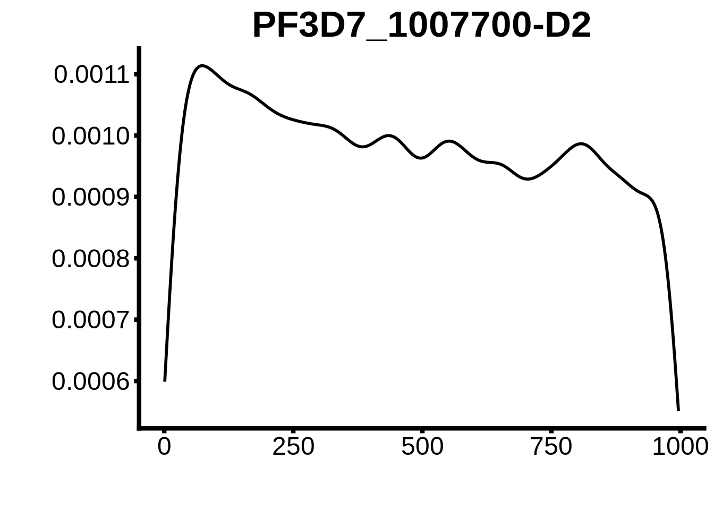
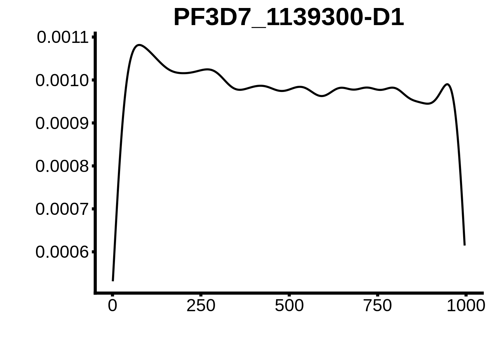
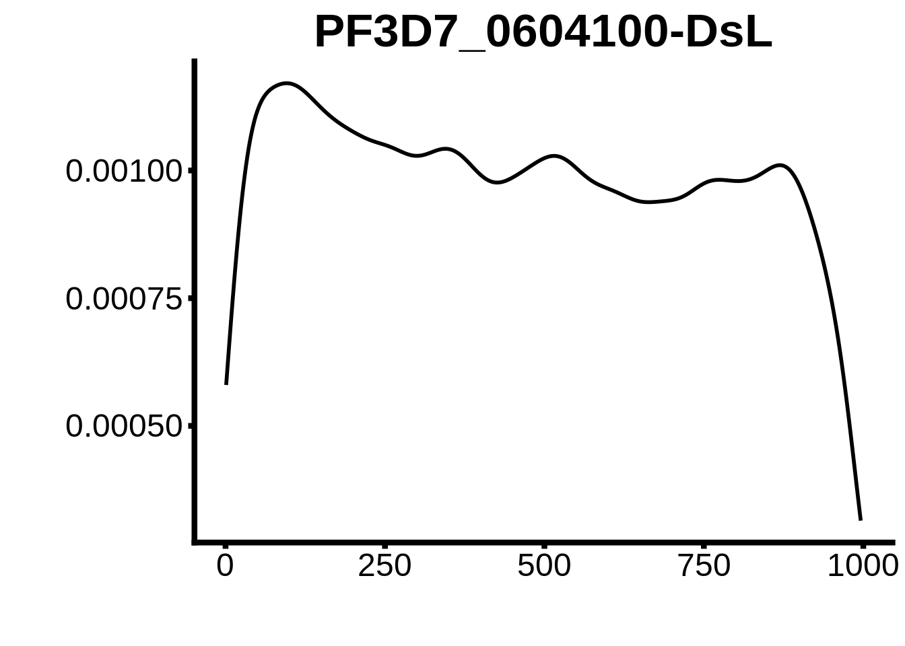
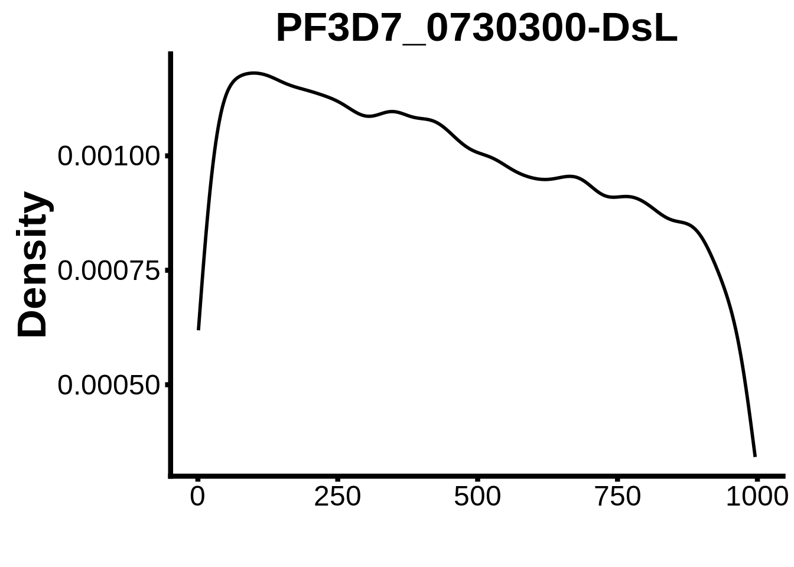
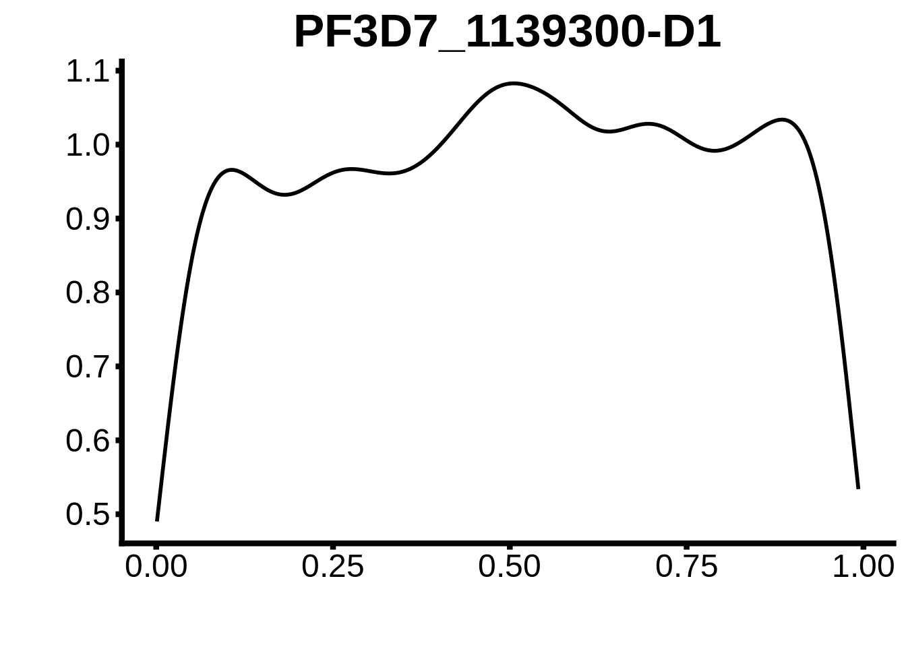
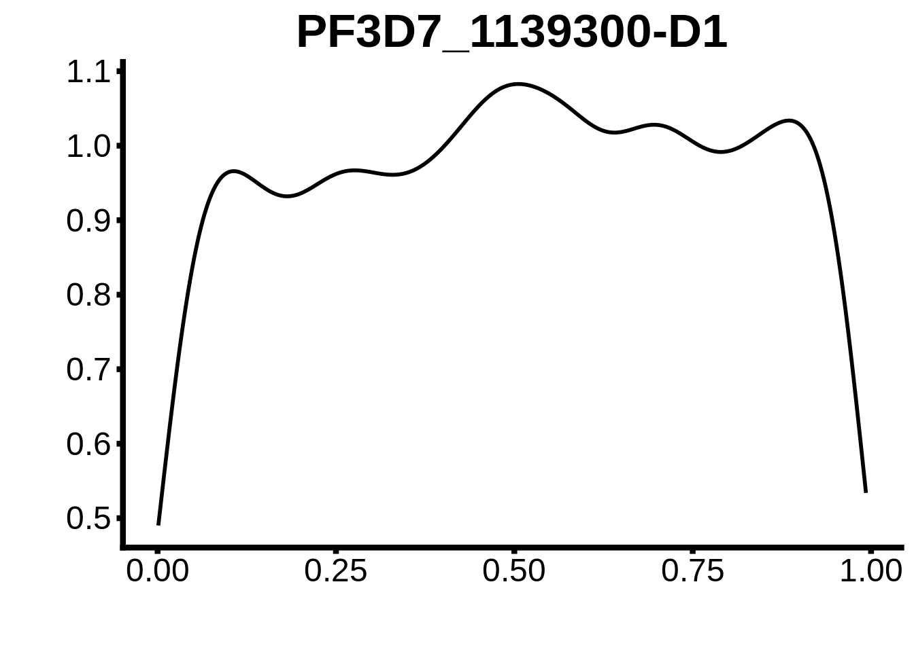

Transcription Factor Binding Site Analysis
Philipp Ross
2018-09-25
Last updated: 2018-10-26
workflowr checks: (Click a bullet for more information)-
✖ R Markdown file: uncommitted changes
The R Markdown file has unstaged changes. To know which version of the R Markdown file created these results, you’ll want to first commit it to the Git repo. If you’re still working on the analysis, you can ignore this warning. When you’re finished, you can runwflow_publishto commit the R Markdown file and build the HTML. -
✔ Environment: empty
Great job! The global environment was empty. Objects defined in the global environment can affect the analysis in your R Markdown file in unknown ways. For reproduciblity it’s best to always run the code in an empty environment.
-
✔ Seed:
set.seed(12345)The command
set.seed(12345)was run prior to running the code in the R Markdown file. Setting a seed ensures that any results that rely on randomness, e.g. subsampling or permutations, are reproducible. -
✔ Session information: recorded
Great job! Recording the operating system, R version, and package versions is critical for reproducibility.
-
Great! You are using Git for version control. Tracking code development and connecting the code version to the results is critical for reproducibility. The version displayed above was the version of the Git repository at the time these results were generated.✔ Repository version: dd9d56a
Note that you need to be careful to ensure that all relevant files for the analysis have been committed to Git prior to generating the results (you can usewflow_publishorwflow_git_commit). workflowr only checks the R Markdown file, but you know if there are other scripts or data files that it depends on. Below is the status of the Git repository when the results were generated:
Note that any generated files, e.g. HTML, png, CSS, etc., are not included in this status report because it is ok for generated content to have uncommitted changes.Ignored files: Ignored: .Rhistory Ignored: .Rproj.user/ Ignored: analysis/.DS_Store Ignored: analysis/.httr-oauth Ignored: code/.DS_Store Ignored: code/differential_expression/ Ignored: code/differential_phase/ Ignored: data/ Ignored: docs/.DS_Store Ignored: docs/figure/.DS_Store Ignored: docs/figure/neighboring_genes.Rmd/.DS_Store Ignored: output/ctss_clustering/ Ignored: output/differential_detection/ Ignored: output/differential_expression/ Ignored: output/differential_phase/ Ignored: output/extensive_transcription/ Ignored: output/final_utrs/ Ignored: output/gcbias/ Ignored: output/homopolymer_analysis/ Ignored: output/neighboring_genes/ Ignored: output/promoter_architecture/ Ignored: output/tfbs_analysis/ Ignored: output/transcript_abundance/ Untracked files: Untracked: _workflowr.yml Untracked: figures/ Unstaged changes: Modified: README.md Modified: analysis/_site.yml Modified: analysis/about.Rmd Modified: analysis/analyze_neighboring_genes.Rmd Modified: analysis/array_correlations.Rmd Modified: analysis/calculate_transcript_abundance.Rmd Deleted: analysis/chunks.R Modified: analysis/comparing_utrs.Rmd Modified: analysis/ctss_clustering.Rmd Modified: analysis/dynamic_tss.Rmd Modified: analysis/extensive_transcription.Rmd Modified: analysis/final_utrs.Rmd Modified: analysis/gcbias.Rmd Modified: analysis/index.Rmd Modified: analysis/license.Rmd Modified: analysis/process_neighboring_genes.Rmd Modified: analysis/promoter_architecture.Rmd Modified: analysis/strain_differential_detection.Rmd Modified: analysis/strain_differential_expression.Rmd Modified: analysis/strain_differential_phase.Rmd Modified: analysis/tfbs_analysis.Rmd Deleted: docs/Rplots.pdf
Expand here to see past versions:
Refined motif search
Now that we have predicted TSSs, we can refine our motif binding site search space and look at smaller regions of sequence just upstream of our predicted TSSs. We will use our most commonly used TSSs for this.
First we need to create promoter regions to analyze:
promoter_region <- 1000
core_genes <- readr::read_tsv("../data/gene_lists/core_pf3d7_genes.txt",col_names=F)$X1
upstream_ORF <- rtracklayer::import.gff3("../data/annotations/genes_3D7_v24.gff") %>%
tibble::as_tibble() %>%
dplyr::filter(ID %in% core_genes) %>%
dplyr::mutate(newend=ifelse(strand=="+",start,end+promoter_region),
newstart=ifelse(strand=="+",start-promoter_region,end)) %>%
dplyr::select(-start,-end) %>%
dplyr::rename(start=newstart,end=newend) %>%
GenomicRanges::GRanges()
promoters_3d7 <- rtracklayer::import.gff3("../output/final_utrs/longest_utrs_3d7_plasmodb_compatible.gff") %>%
tibble::as_tibble() %>%
dplyr::mutate(Parent=stringr::str_replace(stringr::str_replace(stringr::str_replace(unlist(Parent), "rna_", ""), "-1", ""),"[.][0-9]","")) %>%
dplyr::distinct() %>%
dplyr::mutate(newend=ifelse(strand=="+",start,end+promoter_region),
newstart=ifelse(strand=="+",start-promoter_region,end)) %>%
dplyr::select(-start,-end) %>%
dplyr::rename(start=newstart,end=newend) %>%
dplyr::filter(type=="5UTR") %>%
GenomicRanges::GRanges()
promoters_hb3 <- rtracklayer::import.gff3("../output/final_utrs/longest_utrs_hb3_plasmodb_compatible.gff") %>%
tibble::as_tibble() %>%
dplyr::mutate(Parent=stringr::str_replace(stringr::str_replace(stringr::str_replace(unlist(Parent), "rna_", ""), "-1", ""),"[.][0-9]","")) %>%
dplyr::distinct() %>%
dplyr::mutate(newend=ifelse(strand=="+",start,end+promoter_region),
newstart=ifelse(strand=="+",start-promoter_region,end)) %>%
dplyr::select(-start,-end) %>%
dplyr::filter(type=="5UTR") %>%
GenomicRanges::GRanges()
promoters_it <- rtracklayer::import.gff3("../output/final_utrs/longest_utrs_it_plasmodb_compatible.gff") %>%
tibble::as_tibble() %>%
dplyr::mutate(Parent=stringr::str_replace(stringr::str_replace(stringr::str_replace(unlist(Parent), "rna_", ""), "-1", ""),"[.][0-9]","")) %>%
dplyr::distinct() %>%
dplyr::mutate(newend=ifelse(strand=="+",start,end+promoter_region),
newstart=ifelse(strand=="+",start-promoter_region,end)) %>%
dplyr::select(-start,-end) %>%
dplyr::filter(type=="5UTR") %>%
GenomicRanges::GRanges()
rtracklayer::export.gff3(object=upstream_ORF,con="../output/tfbs_analysis/upstream_ORF.gff")
rtracklayer::export.gff3(object=promoters_3d7,con="../output/tfbs_analysis/promoters_3d7.gff")
rtracklayer::export.gff3(object=promoters_hb3,con="../output/tfbs_analysis/promoters_hb3.gff")
rtracklayer::export.gff3(object=promoters_it,con="../output/tfbs_analysis/promoters_it.gff")
seqs_upstream_ORF <- BSgenome::getSeq(BSgenome.Pfalciparum.PlasmoDB.v24, upstream_ORF)
names(seqs_upstream_ORF) <- unlist(upstream_ORF$ID)
Biostrings::writeXStringSet(seqs_upstream_ORF,"../output/tfbs_analysis/upstream_ORF.fasta")
seqs3d7 <- BSgenome::getSeq(BSgenome.Pfalciparum.PlasmoDB.v24, promoters_3d7)
names(seqs3d7) <- stringr::str_replace(stringr::str_replace(unlist(promoters_3d7$Parent), "rna_", ""), "-1", "")
Biostrings::writeXStringSet(seqs3d7,"../output/tfbs_analysis/promoters_3d7.fasta")
seqshb3 <- BSgenome::getSeq(BSgenome.Pfalciparum.PlasmoDB.v24, promoters_hb3)
names(seqshb3) <- stringr::str_replace(stringr::str_replace(unlist(promoters_hb3$Parent), "rna_", ""), "-1", "")
Biostrings::writeXStringSet(seqshb3,"../output/tfbs_analysis/promoters_hb3.fasta")
seqsit <- BSgenome::getSeq(BSgenome.Pfalciparum.PlasmoDB.v24, promoters_it)
names(seqsit) <- stringr::str_replace(stringr::str_replace(unlist(promoters_it$Parent), "rna_", ""), "-1", "")
Biostrings::writeXStringSet(seqsit,"../output/tfbs_analysis/promoters_it.fasta")We should also create files that parse the genomic coordinates so as to be able to load them into a genome browser:
Now we need to run fimo on these regions and search for our motifs:
# generate background files
for strain in 3d7 hb3 it; do fasta-get-markov -m 3 ../output/tfbs_analysis/promoters_${strain}.fasta ../output/tfbs_analysis/promoters_${strain}.background; done
fasta-get-markov -m 3 ../output/tfbs_analysis/upstream_ORF.fasta ../output/tfbs_analysis/upstream_ORF.background
# run fimo for promoters with gene names
for strain in 3d7 hb3 it; do fimo --bgfile ../output/tfbs_analysis/promoters_${strain}.background --no-qvalue -oc ../output/tfbs_analysis/promoters_${strain} --thresh 1e-2 ../data/motif_cores/ap2_pbm_cores.meme ../output/tfbs_analysis/promoters_${strain}.fasta; done
fimo --bgfile ../output/tfbs_analysis/upstream_ORF.background --no-qvalue -oc ../output/tfbs_analysis/upstream_ORF --thresh 1e-2 ../data/motif_cores/ap2_pbm_cores.meme ../output/tfbs_analysis/upstream_ORF.fasta
# and for promoters with genome coordinates
for strain in 3d7 hb3 it; do fimo --bgfile ../output/tfbs_analysis/promoters_${strain}.background --no-qvalue --parse-genomic-coord -oc ../output/tfbs_analysis/promoters_${strain}_genome_coords --thresh 1e-2 ../data/motif_cores/ap2_pbm_cores.meme ../output/tfbs_analysis/promoters_${strain}_genome_coords.fasta; doneNow we can import that data and analyze it for positional information:
fig_theme <- theme(axis.text=element_text(size=18),
axis.title=element_text(size=26,face="bold"),
axis.line.x=element_line(colour="black",size=1.5),
axis.ticks.x=element_line(colour="black",size=1.5),
axis.line.y=element_line(colour="black",size=1.5),
axis.ticks.y=element_line(colour="black",size=1.5),
legend.text=element_text(size=20),
plot.title=element_text(size=26,face="bold"))
motifs_upstream_ORF <- readr::read_tsv("../output/tfbs_analysis/upstream_ORF/fimo.txt") %>%
dplyr::rename(motif_id=`# motif_id`)
for (motif in unique(motifs_upstream_ORF$motif_id)) {
n <- motifs_upstream_ORF %>%
dplyr::filter(motif_id==motif)
#print(ks.test(n$start,runif(10000),alternative="less"))
g <- n %>% ggplot(aes(x=start)) +
geom_line(stat="density",size=1) +
ylab("") +
xlab("") +
ggtitle(motif) +
fig_theme
assign(x=motif,value=g)
print(g)
}
plots <- cowplot::plot_grid(`PF3D7_1342900-D1`,`PF3D7_0613800-D1`,`PF3D7_1408200`,`PF3D7_1222600`,`PF3D7_1143100`,
`PF3D7_1466400`,`PF3D7_0802100`,`PF3D7_0604100-DsL`,`PF3D7_1007700-D3`,`PF3D7_1007700-D1`,
`PF3D7_0420300-D1`,`PF3D7_1007700-D2`,`PF3D7_1107800`,`PF3D7_1350900`,`PF3D7_1456000`,
`PF3D7_1305200`,`PF3D7_1317200`,`PF3D7_0516800-D2`,`PF3D7_0613800-D2ext`,`PF3D7_0420300-D2`,
`PF3D7_1239200-DsL`,`PF3D7_1139300-D1`,`PF3D7_0730300-DsL`)
cowplot::save_plot(plot=plots,filename="../output/tfbs_analysis/upstream_ORF/all_motifs.pdf",base_width=26,base_height=20)
rm(motifs_upstream_ORF)
motifs_3d7 <- readr::read_tsv("../output/tfbs_analysis/promoters_3d7/fimo.txt") %>%
dplyr::rename(motif_id=`# motif_id`)
for (motif in unique(motifs_3d7$motif_id)) {
n <- motifs_3d7 %>%
dplyr::filter(motif_id==motif)
#print(ks.test(n$start,runif(10000),alternative="less"))
g <- n %>% ggplot(aes(x=start)) +
geom_line(stat="density",size=1) +
ylab("") +
xlab("") +
ggtitle(motif) +
fig_theme
assign(x=motif,value=g)
print(g)
}
plots <- cowplot::plot_grid(`PF3D7_1342900-D1`,`PF3D7_0613800-D1`,`PF3D7_1408200`,`PF3D7_1222600`,`PF3D7_1143100`,
`PF3D7_1466400`,`PF3D7_0802100`,`PF3D7_0604100-DsL`,`PF3D7_1007700-D3`,`PF3D7_1007700-D1`,
`PF3D7_0420300-D1`,`PF3D7_1007700-D2`,`PF3D7_1107800`,`PF3D7_1350900`,`PF3D7_1456000`,
`PF3D7_1305200`,`PF3D7_1317200`,`PF3D7_0516800-D2`,`PF3D7_0613800-D2ext`,`PF3D7_0420300-D2`,
`PF3D7_1239200-DsL`,`PF3D7_1139300-D1`,`PF3D7_0730300-DsL`)
cowplot::save_plot(plot=plots,filename="../output/tfbs_analysis/promoters_3d7/all_motifs.pdf",base_width=26,base_height=20)
rm(motifs_3d7)
motifs_hb3 <- readr::read_tsv("../output/tfbs_analysis/promoters_hb3/fimo.txt") %>%
dplyr::rename(motif_id=`# motif_id`)
for (motif in unique(motifs_hb3$motif_id)) {
n <- motifs_hb3 %>%
dplyr::filter(motif_id==motif)
#print(ks.test(n$start,runif(10000),alternative="less"))
g <- n %>% ggplot(aes(x=start)) +
geom_line(stat="density",size=1) +
ylab("") +
xlab("") +
ggtitle(motif) +
fig_theme
assign(x=motif,value=g)
print(g)
}


plots <- cowplot::plot_grid(`PF3D7_1342900-D1`,`PF3D7_0613800-D1`,`PF3D7_1408200`,`PF3D7_1222600`,`PF3D7_1143100`,
`PF3D7_1466400`,`PF3D7_0802100`,`PF3D7_0604100-DsL`,`PF3D7_1007700-D3`,`PF3D7_1007700-D1`,
`PF3D7_0420300-D1`,`PF3D7_1007700-D2`,`PF3D7_1107800`,`PF3D7_1350900`,`PF3D7_1456000`,
`PF3D7_1305200`,`PF3D7_1317200`,`PF3D7_0516800-D2`,`PF3D7_0613800-D2ext`,`PF3D7_0420300-D2`,
`PF3D7_1239200-DsL`,`PF3D7_1139300-D1`,`PF3D7_0730300-DsL`)
cowplot::save_plot(plot=plots,filename="../output/tfbs_analysis/promoters_hb3/all_motifs.pdf",base_width=26,base_height=20)
rm(motifs_hb3)
motifs_it <- readr::read_tsv("../output/tfbs_analysis/promoters_it/fimo.txt") %>%
dplyr::rename(motif_id=`# motif_id`)
for (motif in unique(motifs_it$motif_id)) {
n <- motifs_it %>%
dplyr::filter(motif_id==motif)
#print(ks.test(n$start,runif(10000),alternative="less"))
g <- n %>% ggplot(aes(x=start)) +
geom_line(stat="density",size=1) +
ylab("Density") +
xlab("") +
ggtitle(motif) +
fig_theme
assign(x=motif,value=g)
print(g)
}
plots <- cowplot::plot_grid(`PF3D7_1342900-D1`,`PF3D7_0613800-D1`,`PF3D7_1408200`,`PF3D7_1222600`,`PF3D7_1143100`,
`PF3D7_1466400`,`PF3D7_0802100`,`PF3D7_0604100-DsL`,`PF3D7_1007700-D3`,`PF3D7_1007700-D1`,
`PF3D7_0420300-D1`,`PF3D7_1007700-D2`,`PF3D7_1107800`,`PF3D7_1350900`,`PF3D7_1456000`,
`PF3D7_1305200`,`PF3D7_1317200`,`PF3D7_0516800-D2`,`PF3D7_0613800-D2ext`,`PF3D7_0420300-D2`,
`PF3D7_1239200-DsL`,`PF3D7_1139300-D1`,`PF3D7_0730300-DsL`)
cowplot::save_plot(plot=plots,filename="../output/tfbs_analysis/promoters_it/all_motifs.pdf",base_width=26,base_height=20)
rm(motifs_it)ApiAP2 Activity Predictions
Here we will redo the analysis performed in Campbell et al. using motif hits within newly defined promoter regions. To perform this analysis, two R scripts need to be sourced from within the analysis working directory.
First generate_inputs.R, then estimate_apiap2_activity.R.
Bidirectional promoters
It would be interesting to see whether there is an enrichment for a particular motif found within bidirectional promoters. First let’s extract bidirectional promoter sequences:
for (strain in c("3d7","hb3","it")) {
divergent <- readr::read_tsv(paste0("../output/neighboring_genes/",strain,"_divergent.tsv")) %>%
dplyr::filter(dist < 1000 & dist > 0 & cor >= 0.5)
transcripts <- tibble::as_tibble(
rtracklayer::import.gff3(
paste0("../output/neighboring_genes/full_transcripts_",strain,".gff")))
biprom <- tibble::tibble(seqnames=character(),
start=integer(),
end=integer(),
strand=character(),
source=character(),
type=character(),
ID=character())
for (i in 1:nrow(divergent)) {
start_gene <- dplyr::filter(transcripts, ID == divergent$left_gene[i])
end_gene <- dplyr::filter(transcripts, ID == divergent$right_gene[i])
new <- tibble::tibble(seqnames=start_gene$seqnames,
start=start_gene$end,
end=end_gene$start,
strand="+",
source="PlasmoDB",
type="BiPromoter",
ID=paste0(start_gene$ID,"-",end_gene$ID))
biprom <- dplyr::bind_rows(biprom, new)
}
biprom <- GenomicRanges::GRanges(biprom)
rtracklayer::export.gff3(object=biprom,con=paste0("../output/tfbs_analysis/bidirectional_",strain,".gff"))
seqs <- BSgenome::getSeq(BSgenome.Pfalciparum.PlasmoDB.v24, biprom)
names(seqs) <- biprom$ID
Biostrings::writeXStringSet(seqs,paste0("../output/tfbs_analysis/bidirectional_",strain,".fasta"))
}Now create background files and run fimo:
for strain in 3d7 hb3 it; do fasta-get-markov -m 3 ../output/tfbs_analysis/bidirectional_${strain}.fasta ../output/tfbs_analysis/bidirectional_${strain}.background; done
for strain in 3d7 hb3 it; do fimo --bgfile ../output/tfbs_analysis/bidirectional_${strain}.background --no-qvalue -oc ../output/tfbs_analysis/bidirectional_${strain} --thresh 1e-2 ../data/motif_cores/ap2_pbm_cores.meme ../output/tfbs_analysis/bidirectional_${strain}.fasta; doneAnd now we can read those files in and check the motif occurences:
bimotifs_3d7 <- readr::read_tsv("../output/tfbs_analysis/bidirectional_3d7/fimo.txt") %>%
dplyr::rename(motif_id=`# motif_id`)
biprom_3d7 <- rtracklayer::import.gff("../output/tfbs_analysis/bidirectional_3d7.gff") %>%
tibble::as_tibble()
tmp <- dplyr::inner_join(bimotifs_3d7,biprom_3d7, by=c("sequence_name"="ID")) %>%
dplyr::select(motif_id,sequence_name,start.x,width) %>%
dplyr::mutate(norm_start=start.x/width)
for (m in unique(tmp$motif_id)) {
b <- tmp %>% dplyr::filter(motif_id==m)
g <- b %>% ggplot(aes(x=norm_start)) +
geom_line(stat="density",size=1) +
ggtitle(m) +
xlab("") +
ylab("") +
fig_theme
assign(x=m,value=g)
print(g)
} 

plots <- cowplot::plot_grid(`PF3D7_1342900-D1`,`PF3D7_0613800-D1`,`PF3D7_1408200`,`PF3D7_1222600`,`PF3D7_1143100`,
`PF3D7_1466400`,`PF3D7_0802100`,`PF3D7_0604100-DsL`,`PF3D7_1007700-D3`,`PF3D7_1007700-D1`,
`PF3D7_0420300-D1`,`PF3D7_1007700-D2`,`PF3D7_1107800`,`PF3D7_1350900`,`PF3D7_1456000`,
`PF3D7_1305200`,`PF3D7_1317200`,`PF3D7_0516800-D2`,`PF3D7_0613800-D2ext`,`PF3D7_0420300-D2`,
`PF3D7_1239200-DsL`,`PF3D7_1139300-D1`,`PF3D7_0730300-DsL`,`PF3D7_1222400`)
cowplot::save_plot(plot=plots,filename="../output/tfbs_analysis/bidirectional_3d7/all_motifs.svg",base_width=26,base_height=20)Dynamic motif usage
Additionally, we can look at TSSs that we can confidentally say is shifting and analyze the motifs within these regions to find a nice example to display. We did this for KARHP:
fasta-get-markov -m 3 ../output/tfbs_analysis/kahrp_short.fasta ../output/tfbs_analysis/kahrp_short.background
fimo --bgfile ../output/tfbs_analysis/kahrp_short.background -oc ../output/tfbs_analysis/kahrp_short --thresh 1e-3 ../data/motif_cores/ap2_pbm_cores.meme ../output/tfbs_analysis/kahrp_short.fasta
fasta-get-markov -m 3 ../output/tfbs_analysis/kahrp_long.fasta ../output/tfbs_analysis/kahrp_long.background
fimo --bgfile ../output/tfbs_analysis/kahrp_long.background -oc ../output/tfbs_analysis/kahrp_long --thresh 1e-3 ../data/motif_cores/ap2_pbm_cores.meme ../output/tfbs_analysis/kahrp_long.fastaNow we can look which motifs are unique to the short and long isoforms.
kahrp_short <- readr::read_tsv("../output/tfbs_analysis/kahrp_short/fimo.txt") %>%
dplyr::rename(motif_id=`# motif_id`)
kahrp_long <- readr::read_tsv("../output/tfbs_analysis/kahrp_long/fimo.txt") %>%
dplyr::rename(motif_id=`# motif_id`)
short_unique <- kahrp_short %>% dplyr::filter(!(motif_id %in% kahrp_long$motif_id))
long_unique <- kahrp_long %>% dplyr::filter(!(motif_id %in% kahrp_short$motif_id))
DT::datatable(short_unique, rownames = FALSE)Session information
R version 3.5.0 (2018-04-23)
Platform: x86_64-pc-linux-gnu (64-bit)
Running under: Gentoo/Linux
Matrix products: default
BLAS: /usr/local/lib64/R/lib/libRblas.so
LAPACK: /usr/local/lib64/R/lib/libRlapack.so
locale:
[1] LC_CTYPE=en_US.UTF-8 LC_NUMERIC=C
[3] LC_TIME=en_US.UTF-8 LC_COLLATE=en_US.UTF-8
[5] LC_MONETARY=en_US.UTF-8 LC_MESSAGES=en_US.UTF-8
[7] LC_PAPER=en_US.UTF-8 LC_NAME=C
[9] LC_ADDRESS=C LC_TELEPHONE=C
[11] LC_MEASUREMENT=en_US.UTF-8 LC_IDENTIFICATION=C
attached base packages:
[1] parallel stats4 stats graphics grDevices utils datasets
[8] methods base
other attached packages:
[1] gdtools_0.1.7
[2] bindrcpp_0.2.2
[3] BSgenome.Pfalciparum.PlasmoDB.v24_1.0
[4] BSgenome_1.48.0
[5] rtracklayer_1.40.6
[6] Biostrings_2.48.0
[7] XVector_0.20.0
[8] GenomicRanges_1.32.7
[9] GenomeInfoDb_1.16.0
[10] org.Pf.plasmo.db_3.6.0
[11] AnnotationDbi_1.42.1
[12] IRanges_2.14.12
[13] S4Vectors_0.18.3
[14] Biobase_2.40.0
[15] BiocGenerics_0.26.0
[16] scales_1.0.0
[17] cowplot_0.9.3
[18] magrittr_1.5
[19] forcats_0.3.0
[20] stringr_1.3.1
[21] dplyr_0.7.6
[22] purrr_0.2.5
[23] readr_1.1.1
[24] tidyr_0.8.1
[25] tibble_1.4.2
[26] ggplot2_3.0.0
[27] tidyverse_1.2.1
loaded via a namespace (and not attached):
[1] nlme_3.1-137 bitops_1.0-6
[3] matrixStats_0.54.0 lubridate_1.7.4
[5] bit64_0.9-7 httr_1.3.1
[7] rprojroot_1.3-2 tools_3.5.0
[9] backports_1.1.2 DT_0.4
[11] R6_2.3.0 DBI_1.0.0
[13] lazyeval_0.2.1 colorspace_1.3-2
[15] withr_2.1.2 tidyselect_0.2.4
[17] bit_1.1-14 compiler_3.5.0
[19] git2r_0.23.0 cli_1.0.1
[21] rvest_0.3.2 xml2_1.2.0
[23] DelayedArray_0.6.6 labeling_0.3
[25] digest_0.6.17 Rsamtools_1.32.3
[27] svglite_1.2.1 rmarkdown_1.10
[29] R.utils_2.7.0 pkgconfig_2.0.2
[31] htmltools_0.3.6 htmlwidgets_1.3
[33] rlang_0.2.2 readxl_1.1.0
[35] rstudioapi_0.8 RSQLite_2.1.1
[37] shiny_1.1.0 bindr_0.1.1
[39] jsonlite_1.5 crosstalk_1.0.0
[41] BiocParallel_1.14.2 R.oo_1.22.0
[43] RCurl_1.95-4.11 GenomeInfoDbData_1.1.0
[45] Matrix_1.2-14 Rcpp_0.12.19
[47] munsell_0.5.0 R.methodsS3_1.7.1
[49] stringi_1.2.4 whisker_0.3-2
[51] yaml_2.2.0 SummarizedExperiment_1.10.1
[53] zlibbioc_1.26.0 plyr_1.8.4
[55] grid_3.5.0 blob_1.1.1
[57] promises_1.0.1 crayon_1.3.4
[59] lattice_0.20-35 haven_1.1.2
[61] hms_0.4.2 knitr_1.20
[63] pillar_1.3.0 XML_3.98-1.16
[65] glue_1.3.0 evaluate_0.11
[67] modelr_0.1.2 httpuv_1.4.5
[69] cellranger_1.1.0 gtable_0.2.0
[71] assertthat_0.2.0 mime_0.5
[73] xtable_1.8-3 broom_0.5.0
[75] later_0.7.5 GenomicAlignments_1.16.0
[77] memoise_1.1.0 workflowr_1.1.1
This reproducible R Markdown analysis was created with workflowr 1.1.1